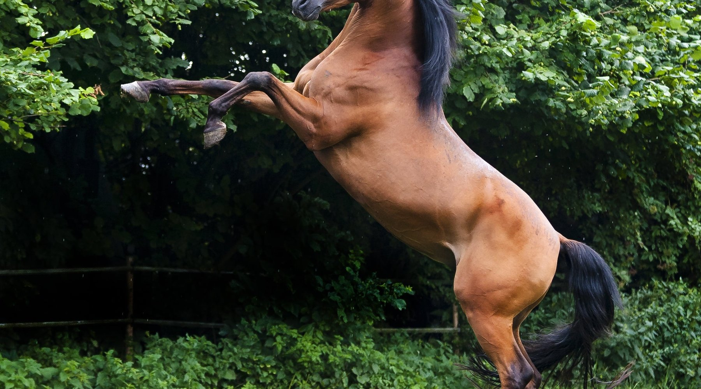

À propos de ceux qui ne montent pas pour arriver, mais pour rester
Une heure avant que le soleil touche l’écurie, quelqu’un y est déjà — un homme ou une femme qui a devancé la lumière. Pas de caméras. Pas de public. Pas de coupes alignées sur une étagère. Seulement l’odeur du foin et du sable encore humide, des souffles chauds qui montent dans l’air de l’aube avant la chaleur du jour, et un sabot qui frappe le sol une fois, comme pour dire : Tu es en retard.
C’est le monde que les journaux montrent rarement. Le monde de ceux qui aiment vraiment les chevaux — qui savent qu’une jument ne se possède pas, qu’elle s’accompagne, et qu’une confiance bâtie pendant des années peut s’effondrer en un instant d’oubli. Dans les écuries, on dit que les chevaux lisent leur humain avant que l’humain ne les lise. Ils saisissent la tension d’une épaule, l’hésitation d’une main, ce qui reste au fond de la poitrine sans être dit. C’est pourquoi personne ne ment devant un cheval.
Rituels de l’aube
Et ce monde a ses rites discrets. Nettoyer un sabot n’est pas une corvée : c’est une habitude d’attention. Le pansage long est une conversation sans paroles. Une selle de cuir qui s’assouplit avec les années porte la mémoire de son cavalier comme un vieux carnet. Quant au cavalier qui commence la journée déjà au galop — avant de s’arrêter un instant à la tête de sa jument pour respirer avec elle — il rate la moitié de ce pour quoi il est venu.
Il y a dans cette vie une élégance qui n’a rien à voir avec le faste. C’est l’élégance de ce qui dure : des bottes d’équitation que l’on soigne pendant dix ans jusqu’à ce qu’elles deviennent plus belles ; une chemise de lin léger qui prend ensemble la sueur du matin et l’odeur des chevaux ; une écurie simple, mais rangée comme un salon. Le luxe, ici, c’est d’avoir du temps — et d’en consacrer une heure entière à un être qui ne vous remercie que d’un regard.

La chaleur pour maître
Chez nous, la chaleur gouverne l’écurie. Celui qui aime vraiment les chevaux ne la combat pas : il s’y accorde et apprend son rythme :
- Les heures de sortie : l’aube très tôt et la fin d’après-midi appartiennent au cheval et au cavalier. Entre les deux : l’ombre et le repos.
- L’eau d’abord : un cheval boit des dizaines de litres par jour — davantage par forte chaleur. L’eau doit être propre, aussi fraîche que possible, et toujours disponible. Lors d’efforts prolongés, les sels (électrolytes) s’ajoutent sous la conduite du vétérinaire ; la sueur prélève plus que de l’eau seule.
- Le refroidissement après l’effort : on ne laisse pas le cheval brusquement après le travail. On le marche jusqu’à ce que le souffle se calme, puis on mouille le corps et les membres à l’eau tiède ou fraîche et l’on enlève l’excès d’eau pour que la chaleur ne reste pas captive contre la peau.
- Signes d’alerte : respiration rapide qui dure, sueur qui s’arrête soudain, ou apathie inhabituelle. Ce sont des signes possibles de stress thermique ; appeler le vétérinaire alors n’admet pas le report.
- Le sable et ses risques : le sol sableux paraît doux, mais un cheval qui mange au sol peut avaler du sable avec l’aliment et développer ce que l’on appelle la colique de sable. Mieux vaut offrir le fourrage dans des mangeoires surélevées ou sur des nattes, et maintenir un apport régulier en fibres.
- Le sabot : une sécheresse sévère le rend fragile. Il faut une hydratation équilibrée et les soins réguliers du maréchal-ferrant — non un excès de produits.
C’est le savoir que les gens de cheval acquièrent par fréquentation — un savoir que nos aïeux maîtrisaient déjà dans le désert avant qu’on ne l’écrive. Les chevaux arabes, connus pour leur endurance et leur aptitude à supporter un sol rude, répondent aux soins par une loyauté que peu de créatures égalent.
Gens de la terre, gens du ciel
Qui connaît les chevaux connaît aussi la terre : quels pâturages mûrissent d’abord, quels chemins s’assouplissent sous le sabot, de quel côté vient le vent. Bien souvent, l’ami des chevaux est aussi l’ami des oiseaux — du fauconnier qui tient l’oiseau sur l’avant-bras au cavalier qui s’arrête pour regarder une bande passer au couchant — parce que l’un et l’autre ont appris à écouter : un hennissement au loin, ou une aile qui fend l’air, si bien que la jument tourne les oreilles avant que quiconque l’ait vu.
Certains disent que les chevaux enseignent la patience. Plus juste : ils enseignent la présence. Quand vous montez une jument en terrain ouvert à l’heure dorée, et que le soleil descend en miel sur les dunes, il ne reste plus de courrier dans la tête, plus de rendez-vous — seulement le rythme de quatre sabots, la chaleur d’un corps sous vous, et un horizon qui s’approche sans se presser.
Voilà ce que signifie appartenir aux chevaux : savoir que le plus beau de la monte, ce sont les moments où l’on ne semble aller nulle part.